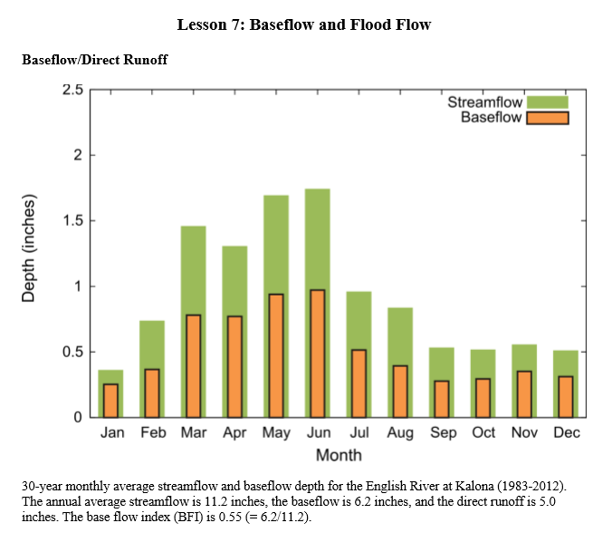
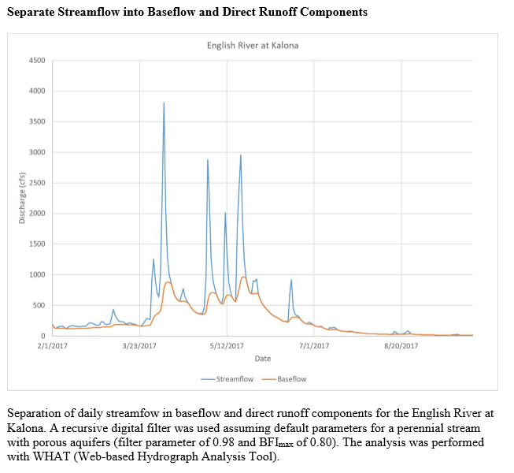
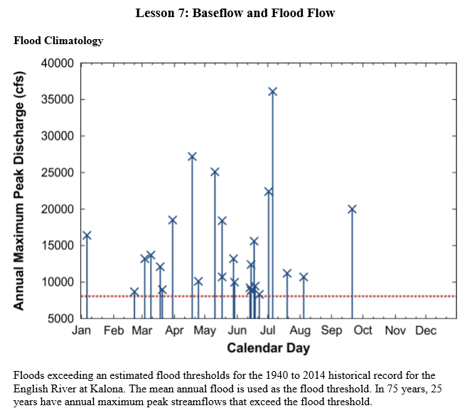
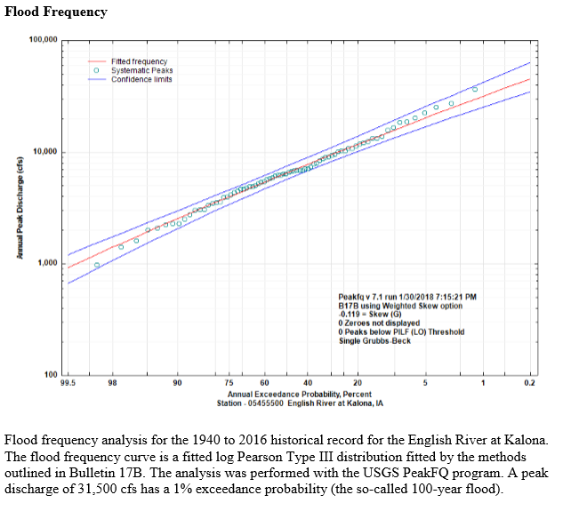

2/1/2019 Notes¶
Begin the course with a review of different people's watershed climatology reports!
Note: have to read the paper in ICON before Monday's class
Baseflow¶
Today we are talking about baseflow.
He's talking about the response of baseflow as a part of the total hydrograph.
- Direct Runoff or Quick Response doesn’t necessarily need to be thought of as land surface runoff. Can pass through drains, for example. Instead like to refer to the as Direct Runnoff, a quick response.
In order to separate Baseflow from Direct Runoff, you can use filtering techniques for baseflow separation.
The tuning of the filtering routine is a bit subjective, as you can see in the image above.
Flood Climatology¶
Another way to analyze the climatology of a stream is to look at flows above a flood “threshold”.
Plot by calendar day can provide information on the occurence of the flood events.
Flood Frequency¶
Can use all of the peak annual data’s to do a Flood Frequency analysis.
We're going to be using USGS's peakFQ software....